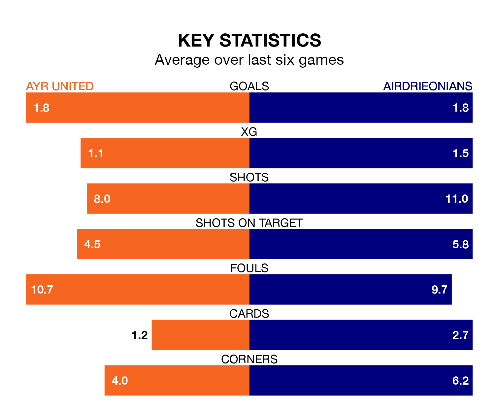

Relegation candidates Ayr United face a challenge against high-flying Airdrieonians at Somerset Park on Friday.
Ayr United are eighth in the Championship table, and have picked up 10 wins and five draws in their 29 games to date.
Airdrieonians, meanwhile, are fourth in the standings with 39 points, having won 11 and drawn six of their first 28 matches, and are 20 points behind table-toppers Dundee United.
In Joshua Rae, Airdrieonians can rely on one of the league's safest pair of hands. He has kept nine clean sheets in his 26 appearances this season, and only one other 'keeper – Dundee United's Jack Walton – has been able to prevent the opposition scoring on more occasions in the Championship.
In Ayr's net, Charlie Albinson has four clean sheets in 18 games. He has conceded a goal every 59 minutes, 50% more often than the 89 minutes between goals for Rae.
In the last 10 years, Ayr and Airdrieonians have played each other on 16 occasions. Ayr won nine of them, Airdrieonians six, and they drew once.
On average, the Honest Men scored 1.5 goals and Airdrieonians 1.4 in those matches.
Their last meeting was on February 17, when Ayr won 3-2 away.
With 33 goals in 28 games so far this season, the away side are the league's second-lowest scorers with 1.2 goals per game. But they are conceding fewer than average too, letting in 32 goals at a rate of 1.1 per game.
United, meanwhile, are average scorers, with 1.4 goals per game. They have conceded 1.8 goals per game.
The Honest Men are in mixed form in the Championship, with three wins and three losses from their last six games.
With three wins and two draws over that period, Airdrieonians's form is slightly better – they have taken 11 points from 18, compared to the hosts' nine.
Ayr's last match was on Saturday, a 2-1 loss against Queen's Park, with Jack Sanders getting the goal for the Honest Men.
Airdrieonians beat Arbroath 5-2 last time out, on March 16, with Aaron Lyall, Charles Telfer, Craig Watson, Liam McStravick and Mason Hancock on the scoresheet.
Updated: 12:39 (UTC), 26/03/24